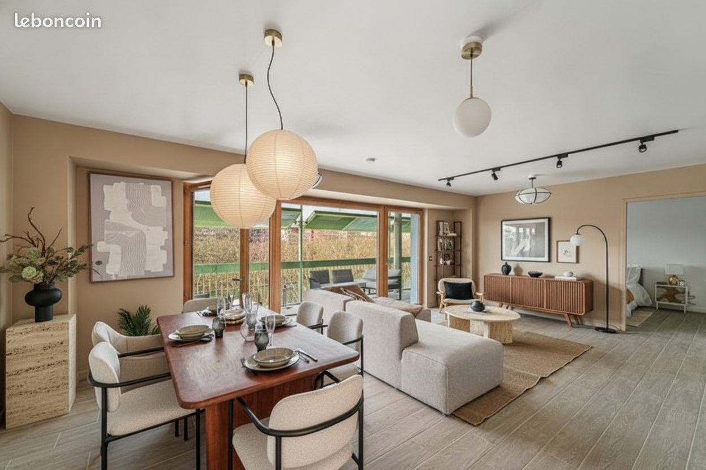
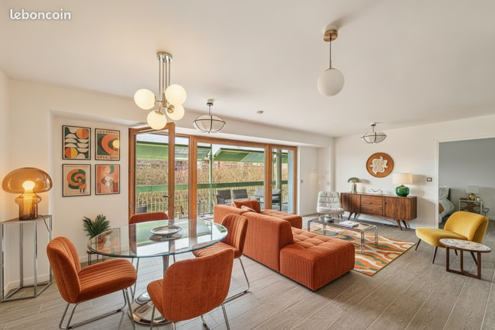
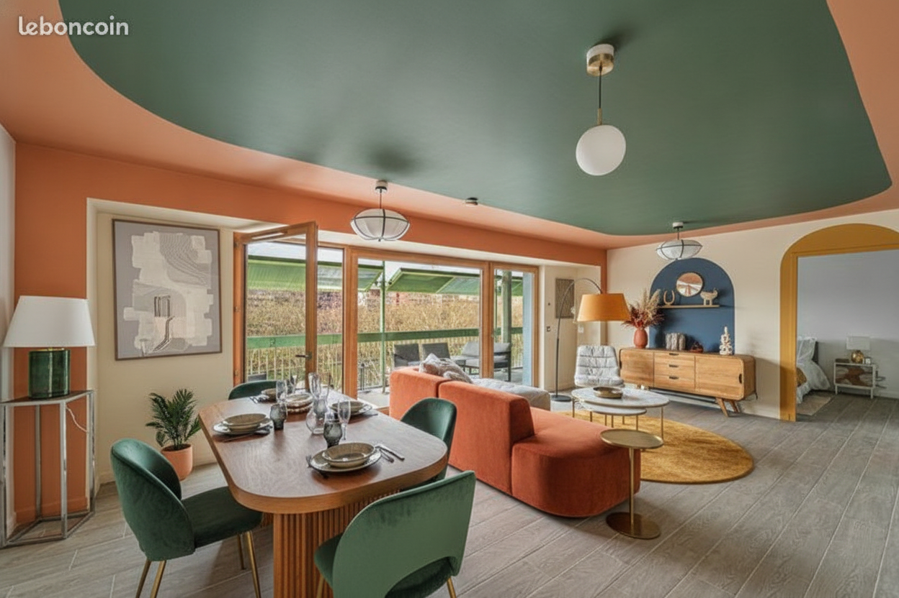
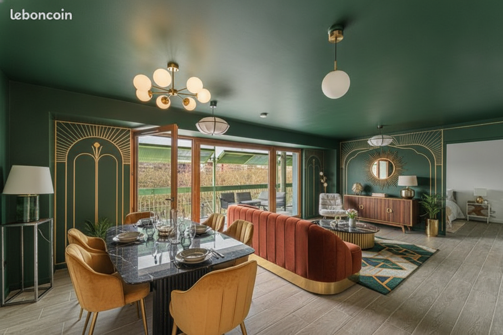
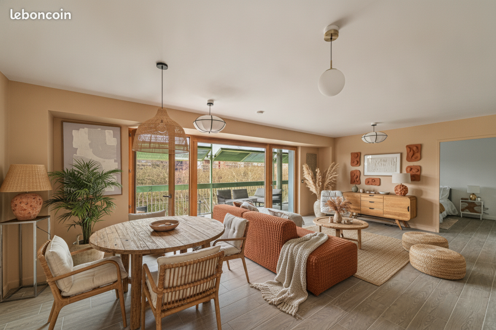

ORIGINAL

| Style | Fidélité /10 | Palette /10 | Doublons | Placement | Archi | Fails | N |
|---|---|---|---|---|---|---|---|
| japandi | 8.0 | 9.0 | 0 | 2 | 2 | 0 | 1 |
| boheme | 8.0 | 9.0 | 0 | 5 | 0 | 0 | 1 |
| seventies | 9.0 | 9.0 | 0 | 3 | 0 | 0 | 1 |
| color-block | 9.0 | 9.0 | 0 | 3 | 2 | 0 | 1 |
| art-deco | 9.0 | 9.0 | 0 | 2 | 1 | 1 | 1 |




